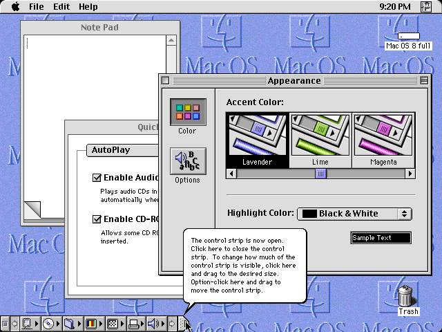

Sistema operativo Mac Os
¿Que es?
macOS es el sistema operativo que impulsa cada Mac. Te permite hacer cosas que simplemente no puedes con otros ordenadores. Esto se debe a que está diseñado específicamente para el hardware en el que se ejecuta, y viceversa. macOS viene con un conjunto completo de apps de diseño atractivo. Funciona en conjunto con iCloud
Caracteristicas del sistema operativo:
- Es un software comercial de código cerrado.
- Su éxito en gran parte es debido a los diseños vanguardistas y atrevidos de sus dispositivos que encantan a los usuarios.
- Ofrece un entorno virtual amigable e intuitivo.
- Excelente compatibilidad con los demás dispositivos Apple que tengas en casa.
- Lo encuentras instalada en todos los equipos de Apple.
- Prioriza la privacidad y seguridad de los usuarios.
- Utiliza procesadores Intel.
- Tiene incluido Finder, Safari o Launchpad.
- Tiene un sistema de archivos propio y procesa nativamente los archivos o programas con formatos para Windows o Linux.
Historia de Mac OS
40 años dan para muchos cambios en la historia del Mac. En 1984, por primera vez, se podía manejar un ordenador con ventanas y un ratón. Hasta entonces todo se hacía mediante comandos de texto. Y sí, el primero fue Apple en hacerlo. Aquel primer sistema operativo sentaría las bases de lo que tenemos hasta el día de hoy. Por un lado ha avanzado mucho, y por otro nos resulta realmente familiar incluso la primera versión de macOS. A continuación vas a poder navegar por las versiones más importantes hasta llegar justo la que tenemos entre nosotros a día de hoy. System, el primer sistema operativo en la historia de macOS El primer Mac (Macintosh Original) trajo consigo un sistema operativo revolucionario en el mundo. Fue el primer ordenador que tenía ratón para hacer clic en los elementos y moverlos por el escritorio. Además, incorporaba apps creativas para poder pintar y dibujar, aunque, recuerda: en 1984 solo había pantallas en blanco y negro. En System 1 ya existía la barra de menús y el Finder, elementos que, increíblemente, se siguen conservando tal cual 40 años después en la historia de macOS.

Después del System 1 la historia del Mac trajo consigo las siguientes versiones de System 3, 4, 5... Eran estéticamente iguales, e incorporaban mejoras de rendimiento, nuevas funcionalidades como la multitarea y una mayor compatibilidad con dispositivos de otras empresas: Por ejemplo, disponían de más variedad de discos duros internos. Hasta ahora, el sistema operativo del Mac se había llamado System, fue con la versión System 7.6 cuando pasó a llamarse Mac OS 7.6. Hasta el día de hoy ha seguido conservando ese nombre. Mac OS 8 Nos encontramos en el año 1997 y Steve Jobs acababa d e regresar de nuevo a Apple para continuar escribiendo la historia del Mac. Mac OS 8 se planteó en un principio como una continuación de System 7, aunque finalmente se dio el salto a la octava versión. Mac OS 8 no era muy diferente a la esencia de System; Tenía soporte para pantallas a color y una de sus novedades es que se podían aplicar diferentes temas para ajustar la interfaz gráfica al gusto de los usuarios.
Mac OS 9 fue un sistema operativo de transición, fue necesario para continuar la historia del Mac, ya que Apple estaba imaginando la revolucionaria versión 10. De esta forma el usuario se adaptaría mejor a todos los cambios que iban a llegar. Por eso, no traía novedades destacables. La más sorprendente fue la posibilidad de grabar CDs desde el propio Finder
A partir de Mac OS X, Apple ha ido lanzando nuevas versiones de su sistema operativo de forma anual, cada una con su propio nombre en clave inspirado en felinos como Jaguar, Panther, Tiger o Leopard. Con cada nueva versión, se han ido introduciendo mejoras y novedades significativas. En 2011, Apple decidió simplificar el nombre de su sistema operativo, pasando a llamarse simplemente «OS X». Bajo esta denominación, llegaron versiones como Lion, Mountain Lion, Mavericks, Yosemite o El Capitan, que siguieron perfeccionando la experiencia de usuario y añadiendo funciones como el Centro de Notificaciones, iCloud, Continuity o Metal para gráficos avanzados. En 2016, Apple volvió a cambiar el nombre de su sistema operativo, esta vez a «macOS», en línea con la nomenclatura de sus otros sistemas como iOS, watchOS o tvOS. Las versiones posteriores como Sierra, High Sierra, Mojave, Catalina, Big Sur, Monterey y Ventura han seguido aportando novedades interesantes. Algunas de las mejoras más destacadas en las últimas versiones de macOS incluyen la integración con Siri, el modo oscuro, la posibilidad de usar aplicaciones de iOS en el Mac, mejoras en el rendimiento y la duración de la batería, un nuevo diseño de iconos y widgets, la traducción integrada en Safari, mejoras en Mensajes y FaceTime, el control universal para manejar varios dispositivos Apple con un solo teclado y ratón, o la posibilidad de usar el iPhone como webcam.
3 Distribuciones
macOS, el sistema operativo de Apple, no tiene distribuciones en el sentido de las distribuciones de Linux. En cambio, se actualiza a través de versiones numeradas, que a menudo también tienen nombres. Tres ejemplos de versiones populares son:
Mac Os
Sonoma
La última versión, lanzada en 2023, con mejoras en la interfaz y nuevas funciones

Mac Os
Ventura
La versión anterior a Sonoma, lanzada en 2022, con mejoras en la gestión de ventanas y otras características.
Mac Os
Monterey
Lanzada en 2021, esta versión incluyó mejoras en la integración con otros dispositivos Apple y en la navegación.
Requerimientos recomendados:
Mac os ventura
- Procesador: Intel Core i5 o superior, Apple M1 o M2
- RAM: Mínimo 8 GB (recomendado 16 GB)
- Almacenamiento: Mínimo 20 GB de espacio libre
- Gráficos: Compatible con Metal
Mac Os Monterey
- Procesador: Intel Core i5 o superior, Apple M1
- RAM: Mínimo 8 GB
- Almacenamiento: Mínimo 12 GB de espacio libre
- Gráficos: Compatible con Metal
Mac os sonoma
- Procesador: Intel Core i5 o superior, Apple M1
- RAM: Mínimo 4 GB
- Almacenamiento: Mínimo 35.5 GB de espacio libre
- Gráficos: Compatible con Metal
Requerimientos minimos:
Mac Os Ventura
- 4 GB de RAM
- 12.5 GB de espacio
Mac Os Monterey
- 4GB de RAM
- 12.5 GB de espacio
Mac Os sonoma
- 4GB de RAM
- 12.5 GB de espacio